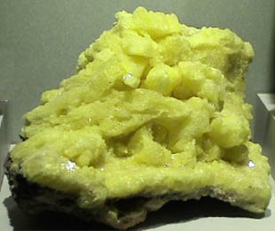
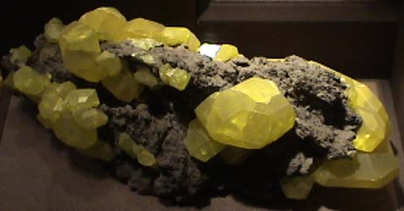

Sulfur
Ordinary sulfur is a yellow solid substance which forms crystals with orthorhombic symmetry. It is insoluble in water, but can be dissolved in carbon disulfide, carbon tetrachloride, and similar non-polar solvents.
This form of sulfur melts at 112.8°C to form a straw colored liquid, which then recrystalizes upon cooling to a monoclinic crystalline form.
Sulfur liquid at temperatures around 120°C is a straw-colored liquid of low viscosity, As the liquid is heated, it gradually darkens in color and becomes more viscous. At about 200°C it is a dark red mass which cannot be poured out of its container. Most substances decrease in viscosity with increasing temperature. Sulfur is unique in that it forms long chain molecules with increasing temperature, called gamma sulfur.
Sulfur has a nominal density of 2 gm/cm3, but in its rhombic crystalline form it has a density of 5.4 gm/cm3. Besides being found in pure form, sulfur can be found in minerals like gypsum, CaSO4.2H2O . Both sulfides and sulfates are important classes of minerals. A silicate mineral which contains sulfur is helvite.
This sample of sulfur is about 15x10 cm and comes from Yellowstone National Park, Wyoming. Sulfur is one of the few elements which can be found in nature in pure form. This sample is on display in the Smithsonian Museum of Natural History.
|

|

This collection of sulfur single crystals is also a part of the Smithsonian collection of minerals.
|